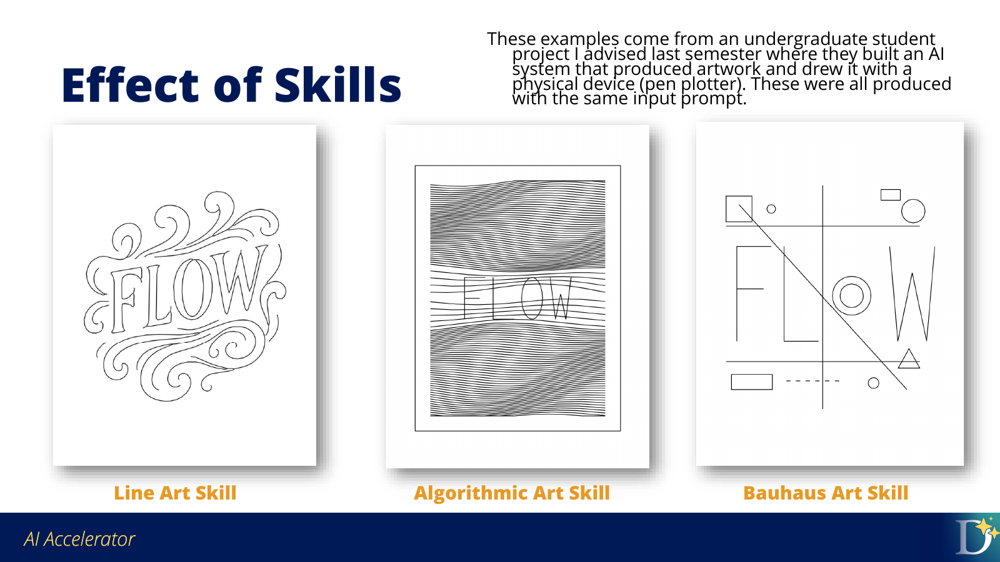

Agent Skills
In Session 1, you used prompts and AGENTS.md to shape how Antigravity worked in one project. In the previous lesson, you saw that the working file format also shapes the agent’s behavior.
Skills solve a related problem: repeated instructions should not live only in the conversation.
When the same guidance appears in many prompts, that guidance may belong in a skill.
The Problem Skills Solve
Suppose a project repeatedly needs figures for analysis presentations:
Use Duke colors. Make the figure readable on a PowerPoint slide. Use large text
and markers. Do not put a title on the figure. Save the figure as a high-quality
PNG.
The instruction can work in one prompt, but repeating it manually creates several problems. For example, you may forget part of the instruction, or it may be inconvenient if the task is complex.
A skill records that repeated workflow in a reusable instruction file.
Prompt, AGENTS.md, or Skill?
These three instruction types do different jobs:
Instruction type |
Best use |
|---|---|
Prompt |
The immediate task: “Analyze this file” or “revise this chart.” |
|
Standing rules for one project: audience, file locations, raw-data rules, review expectations. |
Skill |
Reusable workflow guidance for a type of task across projects. |
In Session 1, AGENTS.md told Antigravity how to work in the checkout-analysis project. A skill is more portable. It can define a reusable method for Duke-style figures, dashboard accessibility review, pedagogical explanations, or recurring data-validation checks.
What Is a Skill?
An agent skill is a reusable instruction set that extends an AI agent with specialized knowledge or a procedural workflow. In practice, a skill is usually a folder or repository containing:
a
SKILL.mdfileoptional supporting files, such as templates, examples, scripts, or reference material
The core of a skill is SKILL.md. Supporting files are optional. For example, Jessica’s pedagogy skill starts with metadata that lets an agent discover when the skill applies, followed by instructions for how to teach. For example, a skill on pedagogy might have the following instructions:
---
name: pedagogy
description: "Use this skill when creating educational content that needs to genuinely teach, not just inform."
---
These are loaded into agent context at start time, and the agent may read the rest of the file when it encounters a relevant task.
How Skills Are Loaded
Agents do not need to load every full skill into context all the time. Skills use a pattern called progressive disclosure. The Agent Skills documentation describes this in three stages:
Discovery: the agent sees the name and description, enough to know when the skill might be relevant.
Activation: when a task matches the skill, the agent reads the full
SKILL.md.Execution: the agent follows the instructions and may load supporting files or run bundled scripts if the skill calls for them.
A skill works because the agent can discover it, read it when relevant, and apply the written instructions to the current task.
You can also explicitly invoke a skill in a prompt:
/pedagogy Draft this lesson so students understand why the workflow works, not
just what commands to run.
The /skill-name pattern tells the agent which reusable instruction set should shape the response.
Where Skills Live
Antigravity looks for skills in well-known locations. These locations include:
Scope |
Example locations |
|---|---|
Global skills |
|
Project skills |
|
Global skills are available across projects. Project skills travel with a repository and are useful when everyone working in the project should share the same workflow guidance.
Use a project skill when the instruction is part of how this project works. Use a global skill when the instruction is part of how you personally work across many projects.
Skill Effects
The same prompt can produce different outputs when different skills are active. In the deck example below, a project used skills to steer an AI art system connected to a physical drawing device. The prompt stayed the same, but the skill changed the method and style.


Skills can make the agent apply a specified method to the same request.
For analytics, the difference may be less visually dramatic but operationally useful. A skill can direct Antigravity to:
always profile data before modeling
use a specific chart style
validate dashboard-ready output files
check accessibility issues in a chart
produce a stakeholder-ready summary format
Skills Repositories
Skills can be shared through Git repositories. These collections provide examples to inspect, install, or adapt:
Review a skill before using it. A skill can include instructions, scripts, templates, and other supporting files, so it should be treated as project code rather than only as prompt text.
Installing or Creating Skills
Some skills can be installed from a Git repository with npx skills:
If npx is unavailable, use the Node.js setup instructions in the introductory tutorial.
Run the installation command from the Session 1 project folder. Replace SKILL_REPO with the skill repository you reviewed:
npx skills add SKILL_REPO --agent antigravity --copy
If a repository contains multiple skills, specify the one you want:
npx skills add SKILL_REPO --skill SKILL_NAME --agent antigravity --copy
You can also ask Antigravity to help create a project skill:
Create a project skill at .agents/skills/duke-figures/SKILL.md, with YAML
frontmatter defining its name and description.
I want to create a skill for producing figures when I'm doing
data analysis. I want to use the Duke color scheme for my figures, and I want
the output to be high quality and appropriate for PowerPoint. The text and
markers should be large and readable, and figures should not have titles.
That prompt describes the reusable workflow standard that the skill should capture.
Start a new conversation in the same project after creating or installing a skill. Antigravity discovers skills when a conversation starts. To invoke the figure skill explicitly, begin your prompt with /duke-figures.
Test a Skill Like an Analyst
Evaluate a skill before relying on it.
Use a before-and-after comparison:
Ask Antigravity to perform the task without the skill.
Save or inspect the output.
Ask Antigravity to perform a similar task with the skill.
Compare the outputs against the behavior the skill was supposed to produce.
Revise the skill if the difference is not clear enough.
For the Duke figure example, you might check:
Are the colors appropriate?
Is the text readable on a slide?
Are markers and lines large enough?
Did the figure avoid unnecessary titles?
Was the output saved at useful resolution?
Would the figure work in a dashboard presentation?
This evaluation checks whether the written skill produces the intended behavior.
Key points
Prompts guide the immediate task.
AGENTS.mdguides one project.Skills guide reusable workflows across tasks or projects.
A skill is usually
SKILL.mdplus optional supporting files.Skills are loaded through discovery, activation, and execution.
Test a skill by comparing behavior before and after using it.